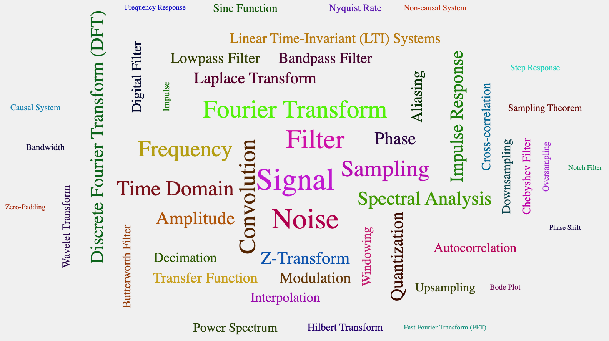

Wordcloud Prompt

This section describes the challenges of using p5.js to create a wordcloud diagram for a signal processing course. It also shows how the specialized JavaScript library wordcloud2.js does a much better job at placing words on a page.
P5.js Prompt
1 2 3 4 5 | |
ChatGPT Response
Here's a list of 50 important terms in signal processing along with their relative frequency of mention in a typical college-level textbook. The words with higher importance will have a larger font size in the word cloud.
Signal Processing Terms and Frequencies
- Signal (80)
- Noise (75)
- Filter (70)
- Fourier Transform (65)
- Sampling (60)
- Convolution (60)
- Frequency (58)
- Time Domain (55)
- Spectral Analysis (50)
- Amplitude (48)
- Discrete Fourier Transform (DFT) (48)
- Impulse Response (47)
- Phase (46)
- Quantization (45)
- Z-Transform (45)
- Laplace Transform (42)
- Modulation (40)
- Aliasing (40)
- Bandpass Filter (39)
- Lowpass Filter (39)
- Transfer Function (38)
- Linear Time-Invariant (LTI) Systems (37)
- Digital Filter (36)
- Decimation (35)
- Interpolation (35)
- Autocorrelation (34)
- Power Spectrum (33)
- Windowing (33)
- Cross-correlation (33)
- Downsampling (32)
- Upsampling (32)
- Sinc Function (30)
- Butterworth Filter (30)
- Chebyshev Filter (29)
- Wavelet Transform (28)
- Hilbert Transform (27)
- Nyquist Rate (26)
- Sampling Theorem (25)
- Impulse (24)
- Bandwidth (23)
- Oversampling (23)
- Step Response (22)
- Causal System (22)
- Non-causal System (21)
- Bode Plot (20)
- Frequency Response (19)
- Zero-Padding (19)
- Notch Filter (18)
- Phase Shift (18)
- Fast Fourier Transform (FFT) (18)
JavaScript Program to Create a Word Cloud using vis.js
1 2 3 4 5 6 7 8 9 10 11 12 13 14 15 16 17 18 19 20 21 22 23 24 25 26 27 28 29 30 31 32 33 34 35 36 37 38 39 40 41 42 43 44 45 46 47 48 49 50 51 52 53 54 55 56 57 58 59 60 61 62 63 64 65 66 67 68 69 70 71 72 73 74 75 76 77 78 79 80 81 82 83 84 85 86 87 88 89 90 91 92 93 94 95 96 97 98 99 100 101 102 103 | |
Instructions
- Open a new HTML file.
- Copy and paste the code above.
- Save and open the file in a web browser.
This will create a word cloud, with larger words reflecting the more frequently mentioned terms in a typical signal processing textbook. The vis.js library uses physics-based layout, but here it is disabled for a word-cloud-like appearance.
A Better Way: Use the wordcloud2.js JavaScript Library
Sample wordcloud2 Prompt
Create a new javascript program using the wordcloud2.js program here:
https://github.com/timdream/wordcloud2.js
Assume that the data is in the file words.json
Response
Here’s how you can create a word cloud using the wordcloud2.js library with data from a words.json file. First, ensure you have the wordcloud2.js library included in your project.
Step 1: Include wordcloud2.js
Download or link to the wordcloud2.js library from here or use a CDN link directly in your HTML file.
Step 2: Create the HTML file
Here’s an HTML file that includes wordcloud2.js and loads the word data from words.json:
1 2 3 4 5 6 7 8 9 10 11 12 13 14 15 16 17 18 19 20 21 22 23 24 25 26 27 28 29 30 31 32 33 34 35 36 37 38 39 40 41 42 43 44 | |
Step 3: JSON Data (words.json)
Here’s the words.json file that contains the word data:
1 2 3 4 5 6 7 8 9 10 11 12 13 14 15 16 17 18 19 20 21 22 23 24 25 26 27 28 29 30 31 32 33 34 35 36 37 38 39 40 41 42 43 44 45 46 47 48 49 50 51 52 53 54 | |
Explanation of the Code
• HTML: The word cloud is displayed in the #wordcloud div, which fills the entire viewport. • JavaScript: • The fetch() function loads the words.json file. • The words are mapped to the format expected by wordcloud2.js, which is a list of arrays where each array contains a word and its weight (size). • The WordCloud() function generates the word cloud in the target element (#wordcloud). • The gridSize and weightFactor properties help control the size and spacing of the words. You can adjust these values to further fine-tune the appearance.
Notes:
- wordcloud2.js: Ensure you have the library correctly referenced via the CDN link or by downloading it.
- File Paths: The words.json file should be in the same directory as your HTML file, or modify the fetch() path if it is located elsewhere.
This setup will generate a word cloud based on the word frequencies in the JSON file!